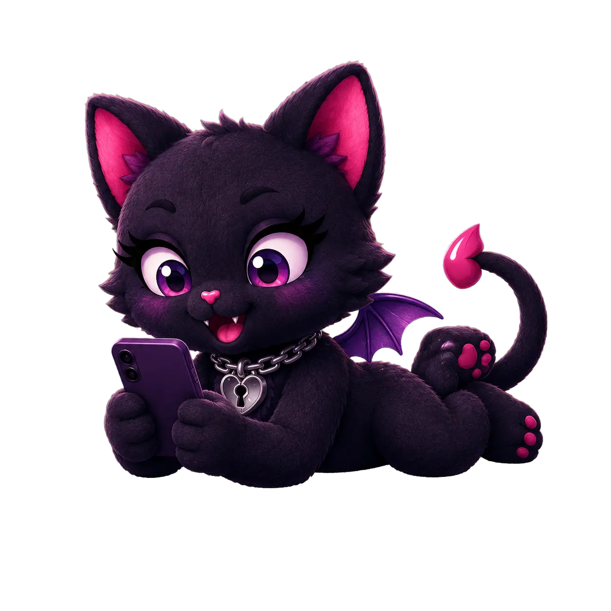

Character Name
Role, dynamic, and short introduction coming later.
Scenarios / Project Template
One central page connects the project’s story, characters, platforms, content guide, diary notes, and artwork.
A spoiler-light premise, central hook, player role, main genres, and relationship structure will introduce the project here.
Character previews
Each important character receives a visual, role, short description, relationship tags, and a spoiler-safe glimpse of their dynamics.
Role, dynamic, and short introduction coming later.
Role, dynamic, and short introduction coming later.
Role, dynamic, and short introduction coming later.
Available on
Every button and note is platform-specific. A project can live on FictionLab, HereHaven, or both.
Direct scenario link, update date, tier requirements, and platform-specific setup will appear here.
Play on FictionLab — Coming LaterDirect scenario link and any HereHaven-specific features will appear here once profile links are available.
Play on HereHaven — Coming LaterIf the two editions differ, this box explains changes in characters, opening messages, memory systems, lore, update timing, or content. If they are identical, it simply says so.

Detailed project content guide
These boxes belong to this project only. Nothing has to compete with warnings from unrelated scenarios.
Story shape
Connection
Intimacy
Intensity
Read before playing
Unavoidable material is separated from content that may appear only through certain routes.
Your place in it
Development
Continuity
Hard boundaries
Material the scenario does not include will be named here when that reassurance helps visitors decide safely.
Development Diary
The newest project-specific entries appear here, with a link to the full diary.
Short notes can explain what changed, what fought back, and what survived the latest rewrite.
Read the full Development Diary →Related artwork
Selected covers, banners, character art, and moodboards appear here, with a route into the full gallery.